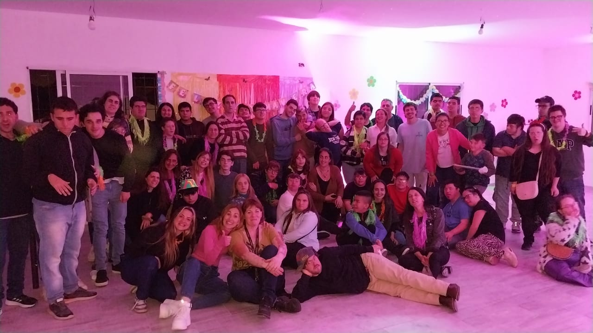

En nuestro consultorio, nos dedicamos a brindar una atención integral y personalizada a niños que presentan Trastornos Generalizados del Desarrollo (TGD). Estos trastornos, como el autismo, afectan la interacción social, la comunicación y el comportamiento de los pequeños.
